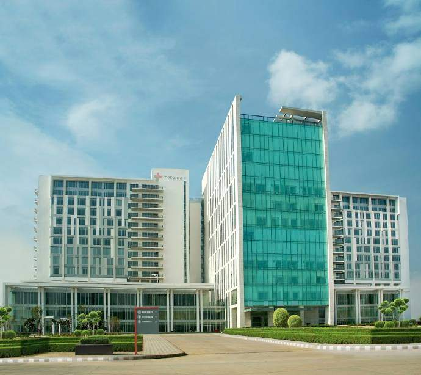

Medanta – The Medicity, Gurugram
Sector 38, Gurugram · Multi-super-speciality hospital
Request Consultation through Elajme India
Areas patients may enquire about
Cardiac CareCancer CareNeurosciencesGastrosciencesOrthopaedicsRenal CareLiver Transplant
International patient coordination
Elajme India coordinates international patient enquiries, medical-record review requests, hospital communication and consultation requests. Clinical suitability and final medical decisions remain with qualified treating teams.